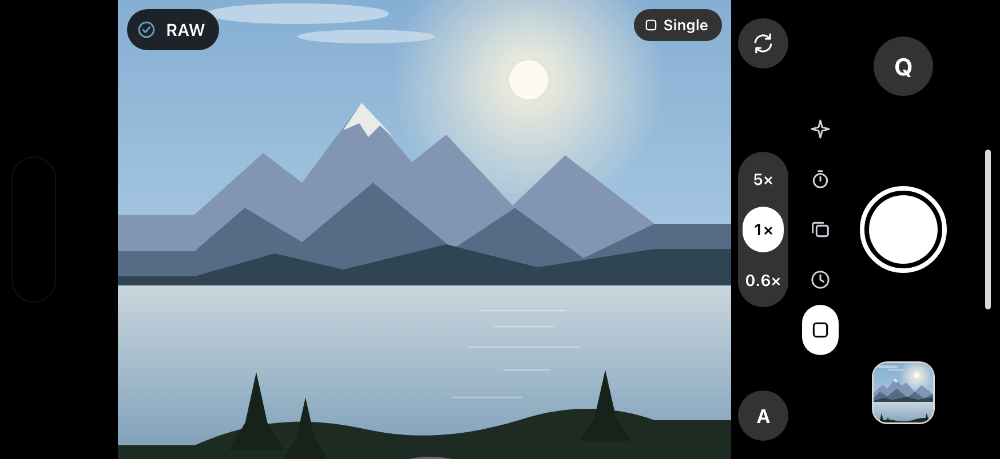
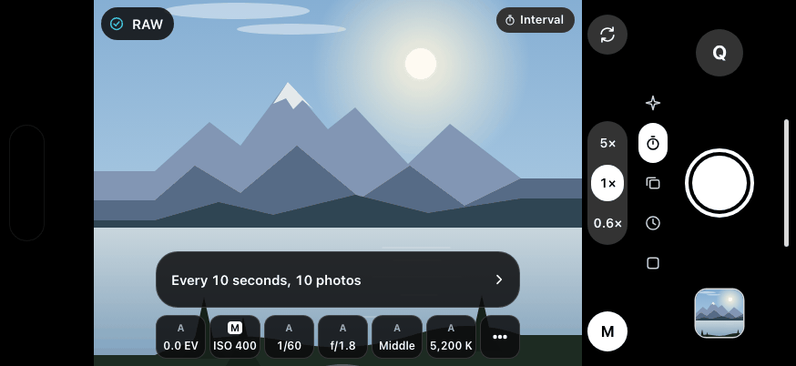
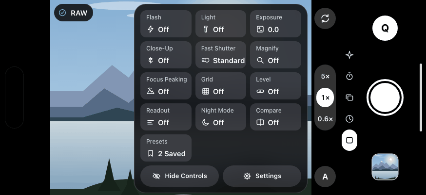
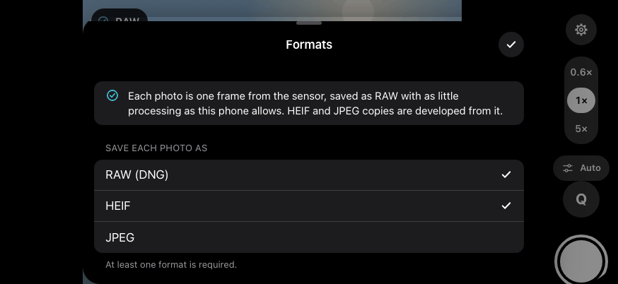
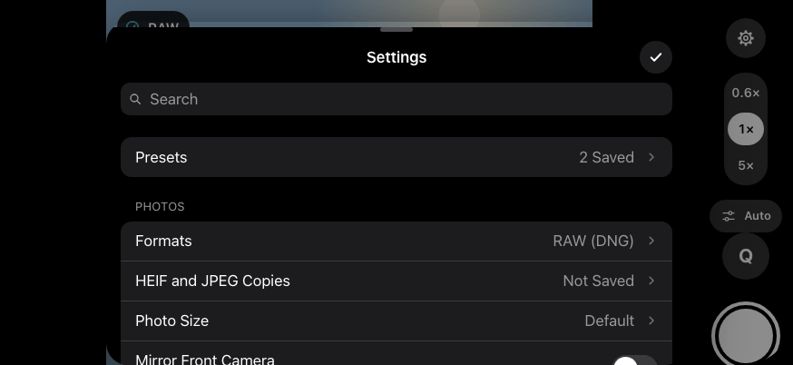
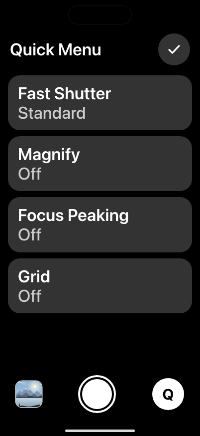
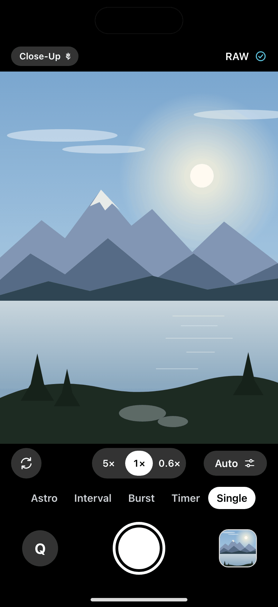
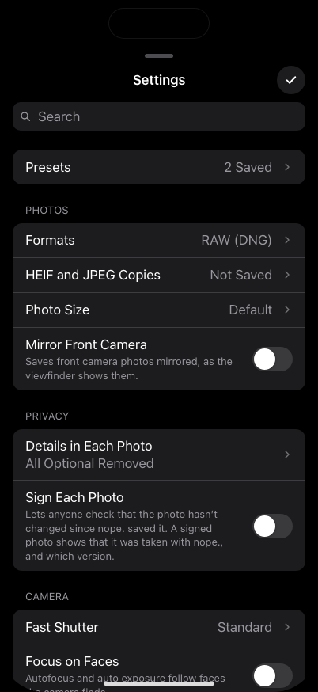

Layouts: the rule for every device
Design version: 1.0.0, direction B · Reach (2026-11-17). Planned design for release 1.0.0; the app is built to match it. Includes the Settings structure and the device coverage accepted on 2026-11-17 (SETTINGS-PLAN.md).
The app has three arrangements, chosen by the window and the text size and by nothing else (CameraLayout.arrangement). Which device it runs on does not matter; a device only decides which windows it can have. This page states the rule, says which screens are drawn for each device and why the rest are not, and shows the iPhone cases. iPad is in ipad.html, the iPhone Duo in duo.html, and Apple Watch in watch.html.
Which arrangement a window gets
| Arrangement | When | What follows |
|---|---|---|
| Stacked | A compact-width window taller than wide: iPhone, the iPhone Duo outer display, Split View at half or less, Slide Over. | The iPhone drawings. Settings and every other presentation is a sheet. Settings opens from Q. |
| Stacked, rows over the picture | A stacked window too short for the 4:3 picture and the rows: the 4.7-inch iPhone, the Duo outer display, a half-width split on iPad. | The lens row and the drive strip rest on the picture’s lower edge over a dark backing. Nothing is removed. |
| Column | A window regular in both size classes, or any window wider than tall: iPad in both orientations, the Duo inner display in both orientations, a small Stage Manager window, and an iPhone while a rotated sheet is open. | The picture with a trailing column. Settings keeps its own button and is a popover (a sheet in night mode). Photo Format and the processing note are popovers. The other sheets are centered. |
| Scrolling | Any window at an accessibility text size. | The status, a 280 pt picture and full-width rows, with the shutter row pinned. No Settings button: Settings opens from Q, as a popover where the width is regular and a sheet otherwise. |
A presentation keeps the style it opened with. A sheet stays a sheet and a popover stays a popover (or is shown by the system as a sheet when the window becomes compact) until it is closed, through rotation, resizing, folding and turning night mode on.
What is drawn for each device, and the rule for the rest
A screen has its own drawing for a device where its layout, its presentation (sheet, popover, centered sheet, full screen) or its reach differs from the iPhone drawing. Where none of these differ, the iPhone drawing applies and the rule below says how.
| Screens | Rule |
|---|---|
| Camera states inside the picture | The focus square, the grid, the level, the magnifier, the live aids panel, the countdown number, pause messages and the dimmed screen are drawn in picture coordinates and are the same in every layout. One iPad drawing of each group stands for the rest. |
| Cards, dials, hints, the readout row | In the column layout they are centered on the picture’s lower edge above the drive strip, 480 pt wide at most, in the order of the stacked layout. Their content never changes with the device. |
| Pills and warnings | Stacked: the status line and the picture’s top edge. Column and sideways: on the picture, format status and warnings leading, pills trailing, each with the backing. |
| Menus | System menus open beside the control that opened them on every device. Only their anchor moves. |
| Pages inside Settings and inside Presets | The same form on every device. In a popover or centered sheet it is 480 to 540 pt wide and scrolls. Formats, Photo Size, Fast Shutter, Viewfinder Overlays, Accessibility, Honesty and About are therefore drawn once, for iPhone. |
| Pro Tools and Compare | Full-screen covers in every window. Drawn for iPhone and iPad; the Duo inner display follows the iPad drawing. |
| Light appearance and night mode | Forms follow the system appearance on every device; the camera is always dark. Night mode is the same red on black in every layout, and turns every popover into a sheet. |
| Right to left | Rows and the column mirror; the picture, numbers and lens labels do not. Drawn for the camera, Q and Settings on iPhone and iPad, and for the Duo inner display; other screens follow the same mirroring. |
| Largest text size | The scrolling layout is the same in every window; it is drawn for iPhone, iPad and the Duo inner display. Forms use the layout drawn in settings-largest and settings-details-largest on every device. |
| iPad orientation | Portrait and landscape differ only in the picture’s shape (3:4 or 4:3) and the room around it. Auto, Manual Controls, Q and Settings are drawn in both; every other iPad screen is drawn in landscape and follows the same rule in portrait. |
| iPhone Duo | The outer display is the stacked layout with rows over the picture; every iPhone screen applies to it at 382 × 644 pt. The inner display is the column layout; every iPad screen applies to it at 867 × 635 pt, or 669 × 835 pt turned. A fold or unfold keeps what is open and changes only the layout; half-open has no layout of its own. |
| Not drawn: iPhone sideways at the largest text size | The scrolling layout stays portrait, as the stacked layout does. How its full-width rows read with the phone on its side is checked on a device before release and is not specified here. |
iPhone held sideways
The layout stays portrait; symbols and words turn upright. A sheet rotates with the phone, and while one is open the camera behind it is in the column layout.






Largest text size and right to left




Lock Screen camera
The camera opened from the Open nope. control on a locked iPhone is the same camera screen, running with a copy of the settings. Its behavior is not changed in 1.0.0; what is offered while locked is confirmed on a device, and any restriction is left to issue 83.

